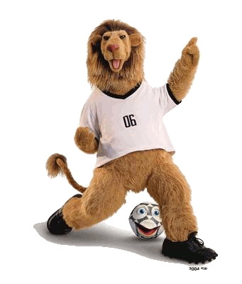
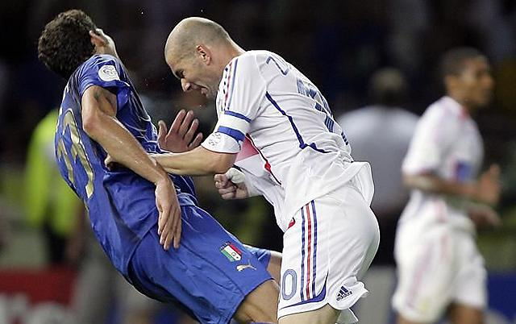

FIFA World Cup 2006
The 2006 FIFA World Cup was the 18th FIFA World Cup, the quadrennial international
football world championship tournament. It was held from 9 June to 9 July 2006 in
Germany, which won the right to host the event in July 2000. Teams representing 198
national football associations from all six populated continents participated in the
qualification process which began in September 2003. Thirty-one teams qualified from
this process, along with the host nation, Germany, for the finals tournament. It was
the second time that Germany staged the competition (the first was in 1974 as
West Germany and also a re-FIFA World Cup), and the tenth time that it was held in Europe.
Italy won the tournament, claiming their fourth World Cup title. They defeated France 5–3
in a penalty shoot-out in the final, after extra time had finished in a 1–1 draw. Germany
defeated Portugal 3–1 to finish in third place. Angola, Ghana, Ivory Coast, Trinidad and
Tobago, and Togo made their first appearances in the finals. It was also the first appearance
of Serbia and Montenegro under that name; they had previously appeared in 1998 as Yugoslavia.
The 2006 World Cup stands as one of the most watched events in television history, garnering
an estimated 26.29 billion non-unique viewers, compiled over the course of the tournament.
The final attracted an estimated audience of 715.1 million people.The 2006 World Cup
ranks fourth in non-unique viewers, behind the World Cup in 1994, 2002, and 1990.As the
winner, Italy represented the World in the 2009 FIFA Confederations Cup.

Final
The 2006 FIFA World Cup Final was a football match that took place on 9 July 2006
at the Olympiastadion, Berlin, Germany, to determine the winner of the 2006 FIFA World Cup.
Italy beat France 5–3 on penalties after the match finished 1–1 after extra time.
France's Zinedine Zidane was sent off in his last-ever match, for headbutting Italy's
Marco Materazzi's chest in retaliation to Materazzi's verbal provocation.It was the first final
since 1978 in which neither Germany nor Brazil competed (and the second since 1938); it was also
the first all-European final since Italy won the 1982 FIFA World Cup, and the second final to be
decided on penalties (1994 was the first, with Italy losing on that occasion). It was also Italy's
first world title in 24 years, and their fourth overall, putting them one ahead of Germany and
only one behind Brazil. The penalty shoot-out victory for Italy was that country's first in the
World Cup Finals: Italy's three previous penalty shoot-out competitions (including the 1994 final)
had all been lost. The victory also led to Italy topping the FIFA World Rankings in February 2007
for the first time since November 1993.The final started with each side scoring within the first 20 minutes.
Zinedine Zidane opened the scoring by converting a seventh-minute penalty kick,conceded by Marco Materazzi,
which glanced off the underside of the crossbar and into the goal. Materazzi then levelled the scores in the
19th minute, a header from six yards following an Andrea Pirlo corner from the right. Both teams had chances
to score the winning goal in normal time: Luca Toni hit the crossbar in the 35th minute for Italy, later
having a header disallowed for offside, while France were not granted a possible second penalty in the 53rd
minute when Florent Malouda went down in the box after a cover tackle from Gianluca Zambrotta. France appeared
to be the side with better chances to win because of the higher number of shots on goal. They were unable to
capitalise, however, and the score remained at one goal each.At the end of the regulation 90 minutes, the score
was still level at 1–1, and the match was forced into extra time. Italian keeper Gianluigi Buffon made a
potentially game-saving save in extra time when he tipped a Zidane header over the crossbar.As Zidane and
Materazzi were jogging up the pitch close to each other, they briefly exchanged words after Materazzi was
seen tugging at Zidane's jersey before Zidane began to walk away from him. Moments later, Zidane suddenly
stopped, turned around and head-butted Materazzi's chest, knocking him to the ground. Although play was
halted, referee Horacio Elizondo did not appear to have seen the confrontation. According to match officials'
reports, fourth official Luis Medina Cantalejo informed Elizondo of the incident through his headset.
After consulting his assistants, Elizondo issued Zidane a red card in the 110th minute.It marked
the 14th overall expulsion of Zidane's career, and joined him with Cameroon's Rigobert Song as the only
players ever to be sent off during two separate World Cup tournaments.He also became the fourth player
red-carded in a World Cup final, in addition to being the first sent off in extra time.Extra time produced
no further goals and a penalty shoot-out followed, which Italy won 5–3. France's David Trezeguet, the man
who scored the golden goal against Italy in the Euro 2000 final, was the only player not to score his penalty;
his spot kick hit the crossbar, leaving Fabio Grosso – who scored Italy's first goal in the semi-final
against Germany – to score the winning penalty.
